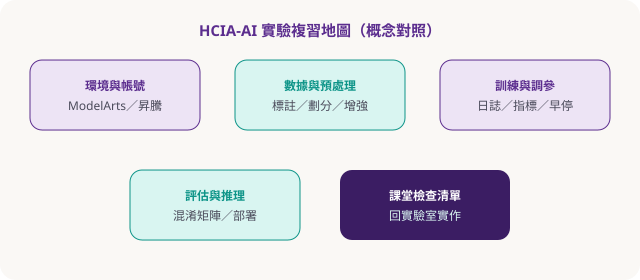

實體課配套 · 引導式複習（非實時執行）
HCIA-AI 實驗複習：步驟圖解 × 對照重點 × 檢查清單
對照澳門定製內訓大綱與 HCIA-AI V4.0 實驗指導（機器學習／深度學習與開發框架／模型部署與應用），以及 Atlas／昇騰開發環境概念。本頁像第二大腦站的 Logseq 實作頁一樣，是走讀與勾選——請回課堂或授權環境再動手，本站不連叢集、不自動跑 notebook。
實驗地圖

機器學習實驗
深度學習／MindSpore
模型部署
昇騰／Atlas 概念
大模型與提示
使用方式（對齊課堂）
- 先通讀本頁「階段 0–4」與檢查清單，用筆或下方勾選標出不懂處。
- 帶著清單打開課堂發的實驗手冊／ipynb（官方環境）。
- 每完成一小節，回來勾選；卡關只記「現象＋錯誤訊息關鍵字」，問助教。
- 勿把帳號金鑰、內網位址、學員個資貼到公開 AI 對話。
華為實驗手冊受版權與保密條款保護。本頁僅提供自寫教學摘要與複習結構，不轉載手冊正文、不提供破解或未授權鏡像。
階段 0 · 環境與心智模型
0-1 你在哪裡跑？
分清三層：寫代碼的地方（Notebook／IDE）、算力在哪（CPU／GPU／NPU）、模型產物去哪（checkpoint、OM／部署服務）。
① 登入課堂平台 → ② 開指定 notebook → ③ 確認 kernel／框架版本 → ④ 跑
import 煙測0-2 Atlas／CANN 概念卡（開發板路線）
- CANN：面向 AI 的異構計算架構；推理常需 ATC 轉模型 + AscendCL 開發應用。
- 配件檢查：開發套件、電源、足夠容量 Micro SD、讀卡器、可 SSH 的 PC。
- 課堂原則：配線與燒錄依現場助教指引；本站不提供映像檔。
階段 1 · 機器學習實驗複習
1-1 經典流程四拍
- 問題定義：分類／回歸／聚類？評估指標是什麼？
- 數據：讀取 → 缺值／類別編碼 → 訓練驗證分割（避免洩漏）。
- 模型：從線性／樹模型等課程指定算法起步，先跑通再談調參。
- 診斷：看誤差來源是偏差還是方差；只改一個變量做對照。
1-2 數學口令（夠用即可）
- 線性代數：張量形狀要對得上（batch × 特徵）。
- 微積分直覺：梯度下降＝沿著損失下降方向更新參數。
- 機率：Softmax + 交叉熵常見於多分類。
階段 2 · 深度學習與開發框架
2-1 網絡最小零件
- 線性層堆疊不夠：用激活函數引入非線性。
- 前向：算預測；反向：依損失更新權重。
- CNN 直覺：區域感受野，適合影像；注意輸入通道與影像尺寸。
for epoch → forward → loss → backward → optimizer.step → log metrics
2-2 課堂常見坑
- 形狀不符：打印
tensor.shape再查手冊範例。 - 忘記切 eval／train 模式（Dropout／BN 行為不同）。
- 學習率過大導致 loss 爆炸；過小則「看起來沒學」。
- 把測試集當調參集反覆榨乾 → 報喜不報實。
階段 3 · 模型部署與應用
3-1 從「訓得動」到「呼叫得到」
- 導出／轉換：依平台要求的格式（課堂指定步驟為準）。
- 推理服務：輸入預處理必須與訓練時一致（縮放、均值、詞表）。
- 驗收：用固定樣例比對輸出；記錄延遲與失敗案例。
- 回滾：保留上一版產物，避免只留「壞掉的最新版」。
階段 4 · 大模型／提示／Agent（大綱對照）
4-1 與《AI 超神應用術》的銜接
內訓大綱含大模型基礎、昇騰方案、提示工程、Agent 介紹。主教材站教你怎麼用生成式工具辦公與創作；HCIA 實驗教你模型與框架如何被訓練／部署。兩者互補：一邊是應用層工作流，一邊是工程層原理。
- 提示工程：約束、格式、少樣本範例——與本站 ch01／ch04 同一肌肉。
- 安全治理：幻覺、資料外洩、越權——兩條線都要考。
總檢查清單（課末自評）
複習測驗 · LABQ1
本練習頁的正確用途是？
複習測驗 · LABQ2
訓練與推理預處理不一致時，最常見後果是？
複習測驗 · LABQ3
激活函數在深度網絡中的主要作用？
複習測驗 · LABQ4
把測試集反覆用於調參的風險是？